MapFish Print 3
Reporting meets maps
Tobias Sauerwein - Marion Baumgartner
Camptocamp
Camptocamp
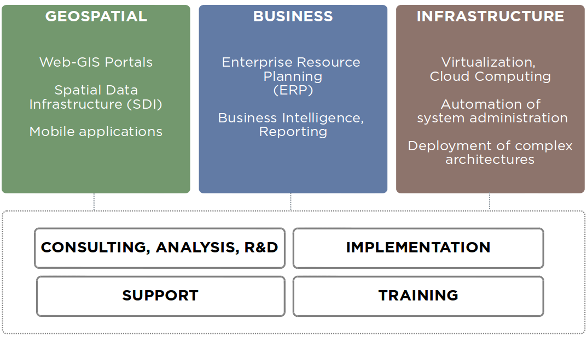

Every spec for every web-mapping project
Req. #78:
Printing/PDF export
You got the choice
Print CSS stylesheets
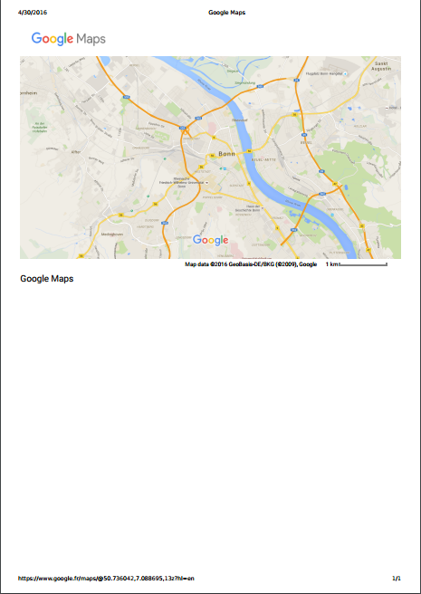Generate PDF in JavaScript
Using jsPDF (OpenLayers 3 example)
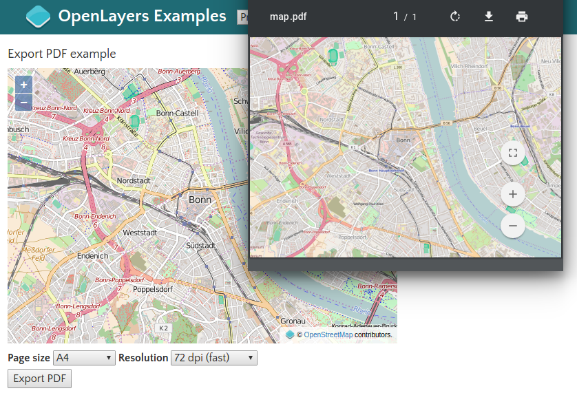Generate PDF with wkhtmltopdf
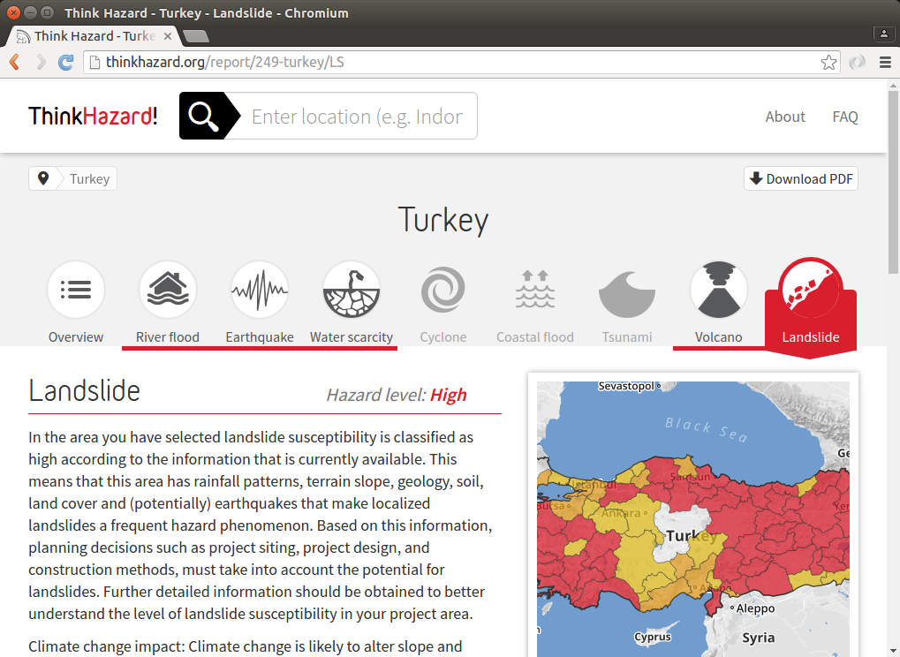
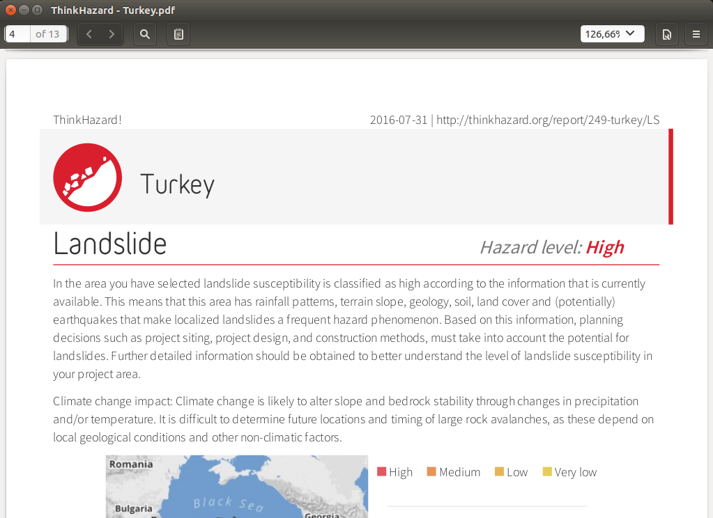
Build your own
TODO grChecklist
- Higher resolutions?
- Page formats?
- Supported geo-data?
- Layouting/templates?
- Client vs. server?
MapFish Print?
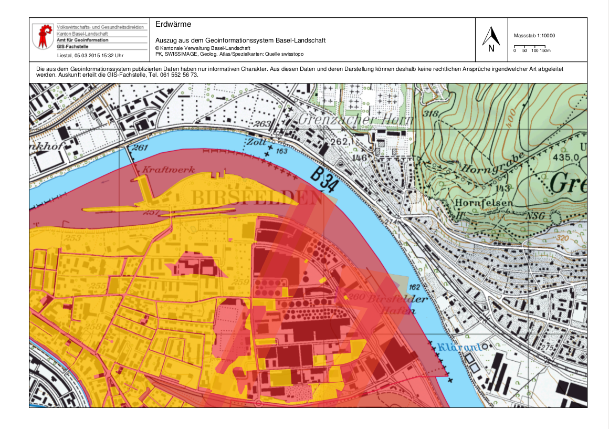MapFish Print 3
Mapping
Layout
Plugin Framework
MapFish Print
Web API / Security / Widgets
Print Process
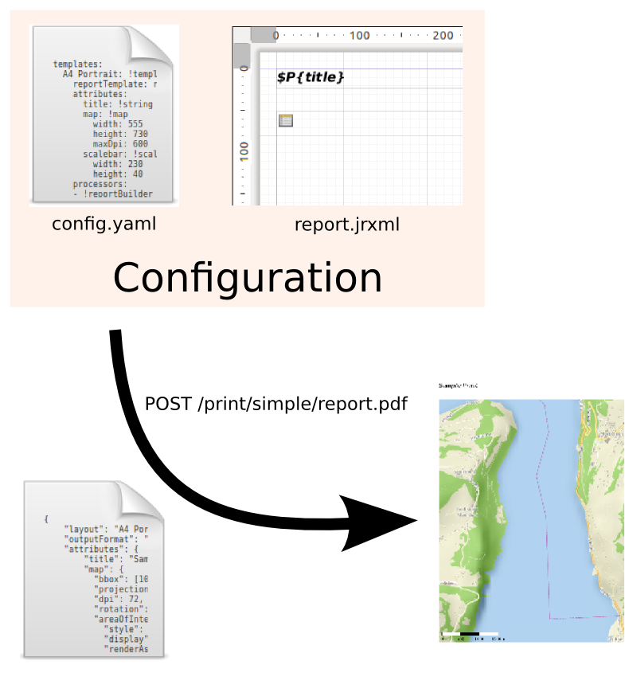YAML Configuration
templates:
A4 Portrait: !template
reportTemplate: report.jrxml
attributes:
...
processors:
...
YAML Configuration (attributes)
templates:
A4 Portrait: !template
reportTemplate: report.jrxml
attributes:
title: !string {}
map: !map
width: 555
height: 730
maxDpi: 600
scalebar: !scalebar
width: 230
height: 40
processors:
...
YAML Configuration (processors)
templates:
A4 Portrait: !template
reportTemplate: report.jrxml
attributes:
...
processors:
- !reportBuilder
directory: '.'
- !createMap
inputMapper: {map: map}
outputMapper: {mapSubReport: mapSubReport}
- !createScalebar {}
Report Designer: Jaspersoft Studio
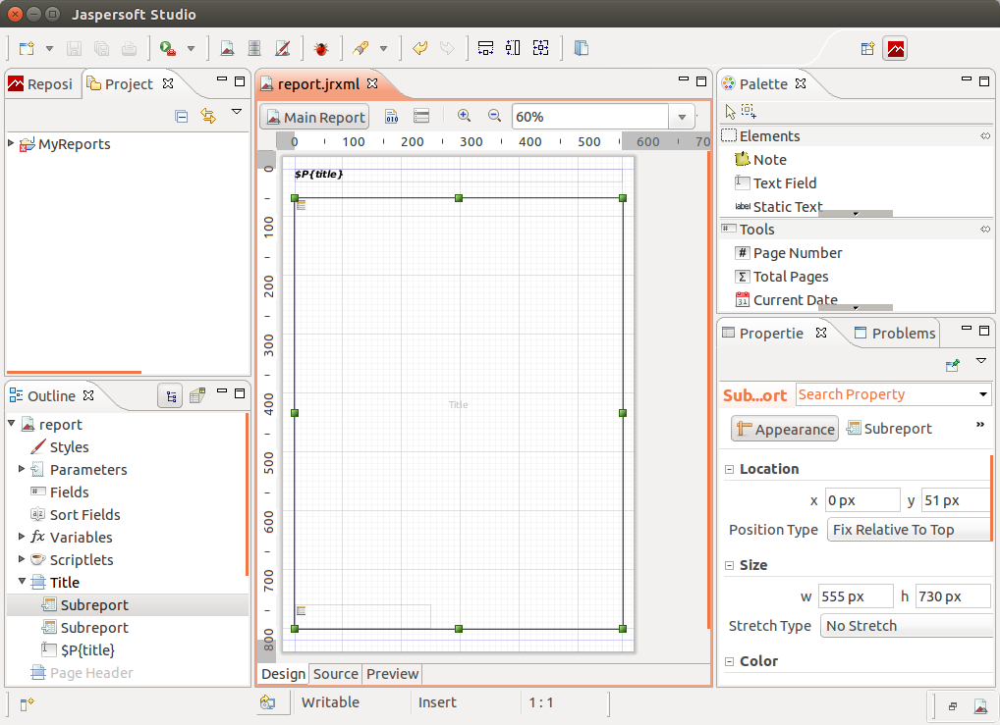Print Request
{
"layout": "A4 Portrait",
"outputFormat": "pdf",
"attributes": {
"title": "Sample Print",
"map": {
"projection": "EPSG:3857",
"dpi": 72,
"center": [957352, 5936844],
"scale": 25000,
"layers": [
{ "type": "osm", "baseURL": "http://tile.abc.com"}
]
}
}
}Map Widgets
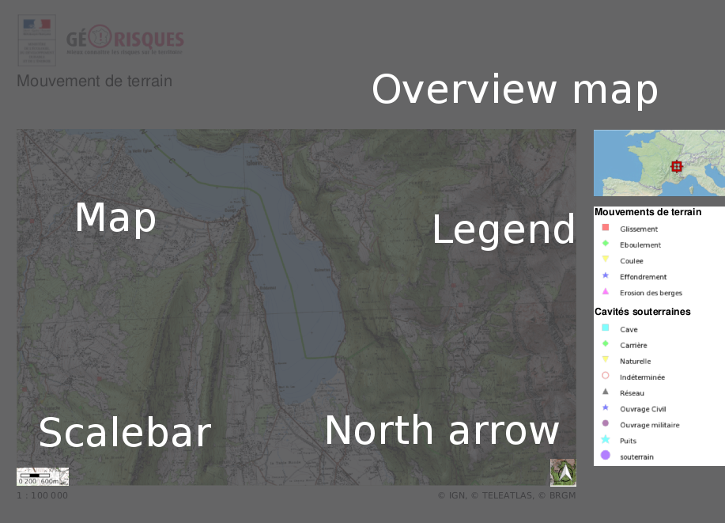Supported Geo-Data
- Vector
- GML
- GeoJSON
- WFS
- Raster
- XYZ Tiles (OSM, ...)
- (Tiled) WMS
- WMTS
- GeoTIFF
We got style!
- Full GeoTools styling with SLD
- MapFish Print 2 JSON styles (similar to OpenLayers 2 styles)
- Improved JSON styles
"[INTERSECTS(geometry, buffer(POLYGON (...), 2000))]": {
"symbolizers": [
{
"strokeColor": "green",
"strokeWidth": 2,
"type": "line"
}
]
},Tables
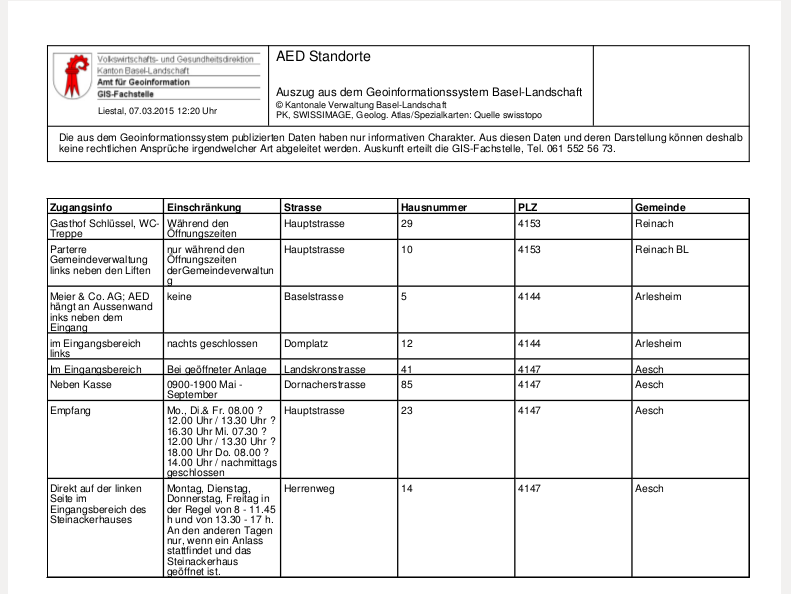Support for multiple maps (datasource)

Charts
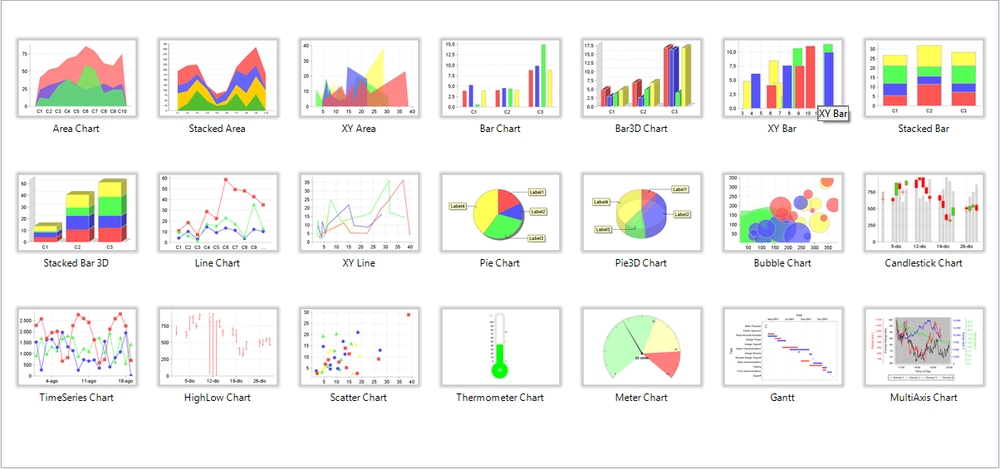External datasources
todo: example 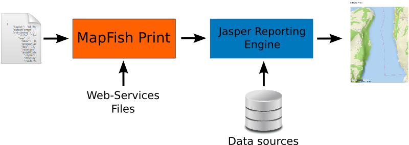Client side support
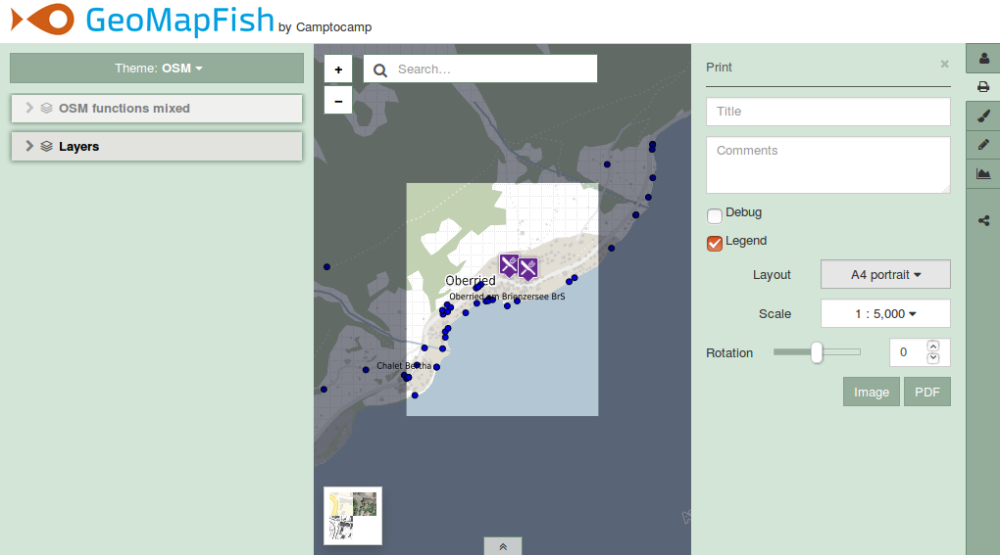Pluggable Architecture
todo ? 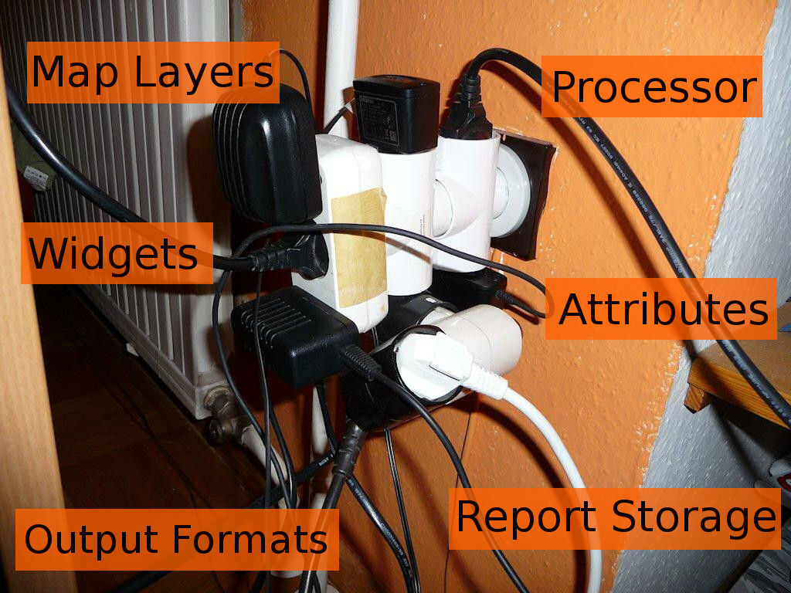MapFish Print 3
MapFish Print on GitHub:
github.com/mapfish/mapfish-print
This presentation:
bit.ly/foss4g-mfp
Me on GitHub/Twitter:
@tsauerwein